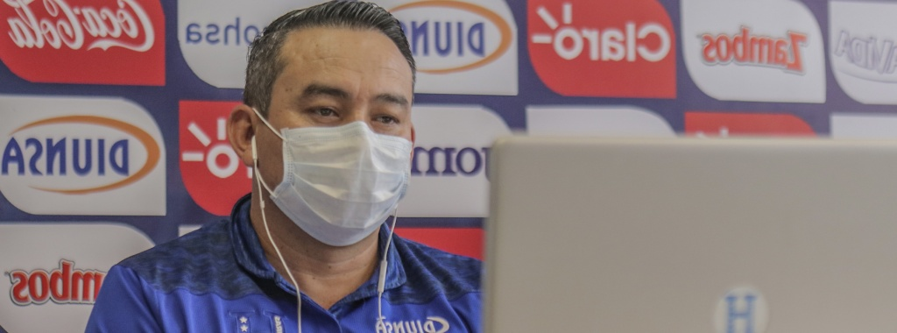

SIGUENOS:


unidepo |
|||||
| INICIO | NACIONAL | SELECCION | LA LIGA | CONTACTO | |
La Confederación Norte, Centroamericana y del Caribe (CONCACAF) organiza el 3er Foro de Liderazgo Técnico que inicia este miércoles 09 de diciembre en una plataforma digital dirigido a las 41 asociaciones miembros representados por sus directores de desarrollo y personalidades afines a esta línea de crecimiento del fútbol.
|  |
| Uno de los expositores invitados al cónclave será el director de desarrollo de la Federación de fútbol de Honduras Jorge Jiménez, responsable de presentar el tema “Construcción de un departamento de desarrollo técnico” y compartir las formas y modelos que han permitido al país la obtención de resultados muy favorables en el cumplimiento de su visión. La CONCACAF para este evento ha considerado mucho los importantes logros obtenidos por la Federación de Honduras y su contribución al progreso del desarrollo técnico en toda la región, por lo que es de su interés que este crecimiento sea conocido y replicado por sus asociaciones miembros. Consultado sobre su exposición Jorge Jiménez explicó que “Estará basada en el modelo de formación de la Escuela Nacional de Entrenadores (ENEFUTH), la propuesta, su filosofía y el modelo de juego aplicado al fútbol de Honduras”. Además expresó que este crecimiento se funda en considerar diferentes elementos que han permitido a la ENEFUTH consolidarse en un sentido de organización que significa tener un programa de estudio definido, un pensum académico muy bien elaborado, considerando todas aristas que convergen alrededor del fútbol en nuestro país para lograr una visión calificada y cumplir con la formación del entrenador hondureño en medio de la globalización de nuestro deporte. |
El seleccionado Pre Olímpico cumple su segundo día de preparación en el nuevo microciclo que ha preparado el cuerpo técnico lleno de compromiso, expectativa, retos y desafíos que los mismos jugadores se han impuesto en la misión de clasificar a los Olímpicos de Tokio 2021. La planificación del martes ha dividido la mañana en dos sesiones, la primera en el gimnasio organizada y desarrollada por los preparadores físicos Sebastián Urrutia y Alejandro Souto, este último incorporado desde el domingo al equipo nacional. La instrucción en el Gym fue completar una serie de estaciones cumpliendo con la entrada en calor, estimulando el fortalecimiento físico y adaptación para estar a tono con la demanda que se tuvo en la cancha con el D.T Fabián Coito.
El final del breve rondo fue la señal que los seleccionados estaban listos para la instrucción futbolística repartida entre el timonel y sus dos asistentes Miguel Falero y Arnold Cruz y en el fondo con los cuatro guardametas convocados bajo la lupa de su entrenado especialista Josué Reyes. Hay que destacar que el énfasis establecido en esta primera parte del entrenamiento matutino estuvo basado en la secuencia de pases con definición, juego iniciado desde el centro del campo con progresión al ataque ampliando el juego con rezago y conclusión por dentro. Dos jugadores no participaron de esta sesión de entrenamiento, cumpliendo con un trabajo diferido, Darixon Vuelto y Luis Meléndez quienes se presentaron a la concentración con una carga muscular en la parte posterior de su pierna derecha y en el aductor derecho respectivamente. Recibiendo manejo de rehabilitación y se les practicará estudios de imagen.
Finalmente en el campamento de la selección preolímpica se presentó Edwin Rodríguez, integrándose a los entrenamientos del mismo martes por la tarde.
Pocas cosas unen y mueven más a cualquier pueblo que el deporte. Alejado de la política, de las religiones, de regionalismos, el deporte agrupa a todos y resalta lo mejor del ser humano, la disciplina, constancia y esfuerzo por dar lo mejor. Cuando se trata de atletas internacionales es mayor aún el orgullo, representan su bandera y en este caso, veremos cuáles son esos atletas hondureños que con tanto orgullo han logrado llevar a podios de todo el mundo la bandera del país centroamericano, de hecho esto también podemos ponerlo de manifiesto teniendo en cuenta lo mucho que se apuesta a favor del deporte en Honduras y que se utiliza un código de bono deportivo para beneficiarse de las oportunidades que te ofrecen.
Mauricio Dubó
Un pelotero bastante joven que ya juega en uno de los equipos con más historia en las Grandes Ligas como lo son los cerveceros de Milwaukee, es sabido cuánto cuesta a un atleta abrirse paso en un mundo tan competido como las Grandes Ligas, pero ya este hondureño se ha lucido en algunos relevos y parece que llegó para quedarse.
Ángela Miranda
Una chica que a golpes se abrió paso en el deporte representando a Honduras. Ha tenido que ser a golpes porque esta digna mujer hondureña, alcanzó el título de campeona centroamericana de boxeo (60 kg)
Josec Ruíz (El Escorpión)
Otro boxeador, en este caso uno reconocido entre los más ágiles en su peso, algo que ratificó cuando se alzó como campeón latinoamericano de boxeo.
| SIGUENOS:
|